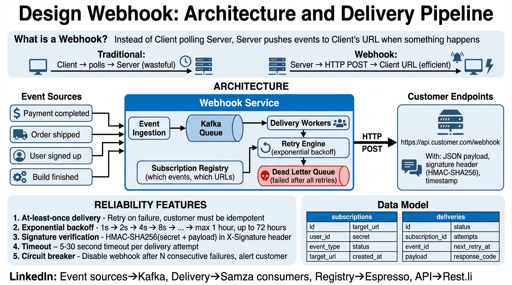

A deep dive into building a reliable, scalable webhook infrastructure — event ingestion, guaranteed delivery, retry mechanics, security, and monitoring at scale.
What is a webhook? A webhook is a user-defined HTTP callback — when an event occurs in a source system, an HTTP POST request is sent to a pre-configured URL owned by the consumer. Instead of the consumer continuously polling for changes, the producer pushes the data in real time.
| Domain | Event Examples | Why Webhooks? |
|---|---|---|
| Payment Processing | Payment succeeded, refund issued, dispute opened | Merchants need instant notification to fulfill orders |
| CI/CD Pipelines | Push event, PR merged, build completed | Triggers automated build/deploy without polling VCS |
| E-Commerce | Order placed, shipment updated, inventory changed | Synchronize inventory across multiple channels in real time |
| Communication | Message received, delivery status, read receipt | Chat bots and integrations require instant event delivery |
| CRM / SaaS | Contact created, deal stage changed, form submitted | Drive workflows and automation without polling APIs |

subscription_id ensures ordering per consumer.All domain events flow through Apache Kafka as the central event bus. Kafka provides durability, ordering guarantees within a partition, and decoupling between event producers and the delivery pipeline.
| Property | Configuration | Why |
|---|---|---|
| Topic | webhook-events | Single topic for all webhook-eligible events |
| Partitions | 256+ | Parallelism for delivery workers; partition by subscription_id |
| Replication Factor | 3 | Survive broker failures without data loss |
| Retention | 7 days | Allow replay of events for debugging or backfill |
| Acks | acks=all | Wait for all ISR replicas before acknowledging produce |
{
"event_id": "evt_a1b2c3d4e5f6",
"event_type": "payment.succeeded",
"timestamp": "2025-01-15T09:30:00Z",
"source": "payments-service",
"data": {
"payment_id": "pay_xyz789",
"amount": 4999,
"currency": "USD",
"customer_id":"cust_abc123"
}
}
The subscription registry is the control plane of the webhook system. It stores which consumers are subscribed to which event types, along with their endpoint URLs, signing secrets, and configuration.
| Field | Type | Description |
|---|---|---|
subscription_id | UUID | Unique identifier for this subscription |
tenant_id | UUID | The customer / application that owns this subscription |
event_types | TEXT[] | Array of event types to subscribe to (e.g., ["payment.*", "order.created"]) |
endpoint_url | TEXT | The HTTPS URL to deliver events to |
signing_secret | TEXT (encrypted) | HMAC-SHA256 secret for payload signing |
status | ENUM | active | paused | disabled |
rate_limit | INT | Max deliveries/sec for this endpoint |
created_at | TIMESTAMP | When the subscription was registered |
Event type subscriptions support glob patterns: payment.* matches payment.succeeded, payment.failed, payment.refunded. The registry evaluates subscriptions using a prefix tree for O(log n) lookups.
Delivery workers are stateless, horizontally scalable processes that consume from Kafka, construct the HTTP request, sign it, and POST to the consumer endpoint.
webhook-events Kafka topic.HMAC-SHA256(signing_secret, payload_body) and set the X-Webhook-Signature header.endpoint_url with a 10-second connect timeout and 30-second read timeout.deliveries table.POST /webhooks/receive HTTP/1.1
Host: api.customer.com
Content-Type: application/json
X-Webhook-Id: evt_a1b2c3d4e5f6
X-Webhook-Timestamp: 1705308600
X-Webhook-Signature: sha256=4d2b8c...a9f1e3
X-Idempotency-Key: dlv_7g8h9i0j
{
"event_id": "evt_a1b2c3d4e5f6",
"event_type": "payment.succeeded",
"timestamp": "2025-01-15T09:30:00Z",
"data": { ... }
}
Failed deliveries are retried with exponential backoff + jitter to avoid thundering herd problems. The retry engine uses a separate Kafka topic with delayed consumption.
| Attempt | Base Delay | With Jitter (range) | Max Cumulative Wait |
|---|---|---|---|
| 1st retry | 10s | 5 – 15s | ~15s |
| 2nd retry | 30s | 15 – 45s | ~1m |
| 3rd retry | 2m | 1m – 3m | ~4m |
| 4th retry | 10m | 5m – 15m | ~19m |
| 5th retry | 1h | 30m – 1.5h | ~1.8h |
| 6th retry | 4h | 2h – 6h | ~7.8h |
| 7th retry (final) | 8h | 4h – 12h | ~19.8h |
delay = min(base_delay * 2^attempt, max_delay) jitter = random(0, delay) next_retry_at = now() + delay/2 + jitter
If an endpoint fails 90%+ of deliveries over a 5-minute window, the circuit opens and the subscription is automatically paused. No further deliveries are attempted until the consumer fixes their endpoint and re-enables the subscription via API. This protects both the webhook system and the consumer from cascading failures.
Events that exhaust all retry attempts are moved to a Dead Letter Queue (DLQ). The DLQ provides visibility, manual replay, and alerting.
| DLQ Feature | Description |
|---|---|
| Storage | Separate Kafka topic (webhook-dlq) with 30-day retention |
| Dashboard | Consumers can view failed events, error details, and last response via API/UI |
| Manual Replay | One-click replay of individual events or bulk replay by time range |
| Alerting | Notify subscription owners when events hit the DLQ (email, Slack, PagerDuty) |
| Auto-disable | If DLQ backlog exceeds threshold, subscription is auto-disabled with notification |
Every webhook delivery is cryptographically signed using HMAC-SHA256. The consumer verifies the signature to ensure the payload is authentic and untampered.
timestamp = current_unix_timestamp()
payload = f"{timestamp}.{json_body}"
signature = HMAC-SHA256(signing_secret, payload)
# Set headers:
X-Webhook-Timestamp: {timestamp}
X-Webhook-Signature: sha256={hex(signature)}
def verify_webhook(request, secret):
timestamp = request.headers["X-Webhook-Timestamp"]
signature = request.headers["X-Webhook-Signature"]
# Reject if timestamp is older than 5 minutes (replay protection)
if abs(time.time() - int(timestamp)) > 300:
return False
expected = hmac.new(
secret.encode(),
f"{timestamp}.{request.body}".encode(),
hashlib.sha256
).hexdigest()
return hmac.compare_digest(f"sha256={expected}", signature)
CREATE TABLE subscriptions (
subscription_id UUID PRIMARY KEY DEFAULT gen_random_uuid(),
tenant_id UUID NOT NULL,
event_types TEXT[] NOT NULL,
endpoint_url TEXT NOT NULL,
signing_secret TEXT NOT NULL, -- encrypted at rest
status VARCHAR(20) DEFAULT 'active',
rate_limit INT DEFAULT 100, -- deliveries/sec
retry_policy JSONB DEFAULT '{"max_attempts": 7, "backoff": "exponential"}',
metadata JSONB,
created_at TIMESTAMPTZ DEFAULT now(),
updated_at TIMESTAMPTZ DEFAULT now(),
CONSTRAINT valid_status CHECK (status IN ('active','paused','disabled'))
);
CREATE INDEX idx_sub_tenant ON subscriptions(tenant_id);
CREATE INDEX idx_sub_event_types ON subscriptions USING GIN(event_types);
CREATE INDEX idx_sub_status ON subscriptions(status) WHERE status = 'active';
CREATE TABLE deliveries (
delivery_id UUID PRIMARY KEY DEFAULT gen_random_uuid(),
event_id UUID NOT NULL,
subscription_id UUID NOT NULL REFERENCES subscriptions(subscription_id),
idempotency_key VARCHAR(64) NOT NULL UNIQUE,
endpoint_url TEXT NOT NULL,
attempt_number INT NOT NULL DEFAULT 1,
status VARCHAR(20) NOT NULL, -- pending, delivered, failed, dlq
http_status_code INT,
response_body TEXT, -- first 1KB of response
latency_ms INT,
error_message TEXT,
next_retry_at TIMESTAMPTZ,
created_at TIMESTAMPTZ DEFAULT now(),
CONSTRAINT valid_delivery_status
CHECK (status IN ('pending','delivered','failed','retrying','dlq'))
);
CREATE INDEX idx_dlv_event ON deliveries(event_id);
CREATE INDEX idx_dlv_sub ON deliveries(subscription_id);
CREATE INDEX idx_dlv_retry ON deliveries(next_retry_at)
WHERE status = 'retrying';
CREATE INDEX idx_dlv_status ON deliveries(status, created_at);
Every webhook payload follows a consistent envelope format with an idempotency key to enable exactly-once processing on the consumer side.
{
"id": "evt_a1b2c3d4e5f6",
"type": "payment.succeeded",
"api_version": "2025-01-15",
"created": 1705308600,
"idempotency_key": "dlv_7g8h9i0j",
"data": {
"object": {
"id": "pay_xyz789",
"amount": 4999,
"currency": "USD",
"status": "succeeded",
"customer_id": "cust_abc123",
"metadata": { "order_id": "ord_456" }
}
}
}
| Field | Purpose |
|---|---|
id | Globally unique event identifier; same across all delivery attempts |
type | Dot-delimited event type for routing and filtering |
api_version | Schema version for backward compatibility; consumers pin to a version |
created | Unix timestamp of when the event occurred in the source system |
idempotency_key | Unique per delivery attempt; consumers use this to deduplicate |
data.object | The actual resource state at the time of the event |
The webhook system guarantees at-least-once delivery. Every event will be delivered to every active subscription at least once. Consumers must be idempotent — processing the same event twice should produce the same result.
| Guarantee | How It Works | Consumer Responsibility |
|---|---|---|
| At-least-once | Kafka offset committed only after successful delivery (2xx). Failures trigger retries. | Deduplicate using idempotency_key; store processed keys in a set with TTL. |
| Ordering | Events for the same subscription are partitioned together in Kafka, preserving order. | If strict ordering matters, process sequentially per subscription_id. |
| Durability | Kafka acks=all + replication factor 3. Events survive broker failures. | Acknowledge receipt with 200 only after persisting the event. |
Retries use decorrelated jitter to prevent thundering herd. If 10,000 deliveries fail at the same time, jitter spreads the retries across the entire backoff window instead of all hitting at base * 2^n simultaneously.
// Decorrelated jitter (preferred over full jitter) sleep = min(max_delay, random_between(base_delay, sleep_prev * 3))
| State | Behavior | Transition |
|---|---|---|
| Closed (normal) | Deliveries proceed normally | → Open when failure rate > 90% over 5 min |
| Open (tripped) | All deliveries queued, none sent | → Half-Open after cool-down period (15 min) |
| Half-Open (probing) | Send 1 test delivery | → Closed if succeeds; → Open if fails |
Every payload is signed with the subscription's unique secret. The consumer verifies the signature to confirm the request originated from the webhook system and was not tampered with in transit. Timestamp inclusion prevents replay attacks.
Publish a static set of egress IP addresses. Consumers can allowlist these IPs at their firewall to reject webhook-shaped requests from unknown sources. IPs are published at /.well-known/webhooks/ips.json and change notifications are sent 30 days in advance.
| Timeout | Value | Rationale |
|---|---|---|
| TCP Connect | 10 seconds | Detect unreachable hosts quickly |
| TLS Handshake | 10 seconds | Catch certificate issues without blocking workers |
| Response (read) | 30 seconds | Allow consumer processing time; anything longer suggests a problem |
| Total request | 45 seconds | Hard cap to prevent worker starvation |
http:// endpoint URLs at subscription registration time10.0.0.0/8, 127.0.0.0/8, 169.254.0.0/16, ::1)Events are partitioned by subscription_id to maintain per-consumer ordering. The number of partitions determines the maximum parallelism of the delivery worker pool.
| Strategy | Partition Key | Trade-off |
|---|---|---|
| Per-subscription ordering | subscription_id | Guarantees ordering per consumer but limits parallelism to partition count |
| Per-tenant ordering | tenant_id | Coarser ordering; simpler but may hotspot on large tenants |
| Round-robin (no key) | None | Maximum throughput but no ordering guarantee |
| Signal | Metric | Action |
|---|---|---|
| Kafka consumer lag | consumer_lag > 10,000 | Scale up workers by 2x |
| p99 delivery latency | p99 > 5s | Scale up workers by 1.5x |
| CPU utilization | CPU > 70% | Scale up by 1 pod per 10% over threshold |
| Idle workers | utilization < 20% for 10 min | Scale down gradually (1 pod / min) |
Not all webhooks are equally urgent. A payment notification has higher business value than an analytics event. The system supports 3 priority tiers implemented as separate Kafka topics with dedicated worker pools.
| Priority | Topic | Worker Pool | SLA |
|---|---|---|---|
| P0 — Critical | webhook-events-p0 | Dedicated, always-on pool (min 10 workers) | p99 < 2s |
| P1 — Standard | webhook-events-p1 | Auto-scaled pool (3–50 workers) | p99 < 5s |
| P2 — Best Effort | webhook-events-p2 | Shared pool, scaled down during load | p99 < 30s |
Each subscription has a configurable rate limit (default: 100 deliveries/sec). This protects consumer endpoints from being overwhelmed. Rate limiting is implemented per-endpoint using a distributed token bucket backed by Redis.
// Token bucket rate limiter (per subscription)
key = f"ratelimit:{subscription_id}"
tokens = redis.get(key) or rate_limit
if tokens > 0:
redis.decr(key)
deliver(event)
else:
enqueue_with_delay(event, 1_second)
| Metric | Type | Alert Threshold |
|---|---|---|
| Delivery success rate | Gauge | < 99% over 5 min → page |
| p50 / p99 delivery latency | Histogram | p99 > 5s → warn; > 15s → page |
| Kafka consumer lag | Gauge | > 50,000 events → page |
| DLQ inflow rate | Counter | > 100 events/min → page |
| Circuit breaker trips | Counter | > 5 trips/hour → investigate |
| Active subscriptions | Gauge | Drop > 10% in 1h → warn |
| Retry queue depth | Gauge | > 100,000 → warn |
Every delivery carries a trace ID from the originating event through Kafka, the delivery worker, and to the consumer endpoint. This enables end-to-end latency analysis and pinpoints bottlenecks across the pipeline. Use OpenTelemetry with W3C Trace Context propagation via traceparent header.
| Webhook Component | LinkedIn Equivalent | Details |
|---|---|---|
| Kafka (event bus) | Kafka | LinkedIn invented Kafka. Same technology powers the event backbone for all async workflows including notification delivery. |
| Delivery Workers | Samza + Kubernetes | Samza for stream processing consumers; Kubernetes (Nimbus) for deploying and auto-scaling stateless worker pods. |
| Subscription Registry | Espresso | Espresso's document store handles subscription metadata with auto-sharding, secondary indexes, and cross-DC replication. |
| Rate Limiter | Couchbase | Distributed token bucket counters stored in Couchbase for sub-millisecond reads and atomic decrements. |
| Dead Letter Queue | Kafka DLQ Topics | Failed events routed to dedicated Kafka DLQ topics with extended retention for replay and investigation. |
| API Gateway | Rest.li + D2 | Rest.li provides the subscription management API. D2 handles service discovery and load balancing for internal routing. |
| Monitoring | InGraphs + AutoMetrics | LinkedIn's monitoring stack: InGraphs for time-series dashboards, AutoMetrics for anomaly detection and alerting. |
| Distributed Tracing | LinkedIn Call Graph | LinkedIn's distributed tracing system tracks request flow across services. Every webhook delivery is traced from source event to consumer response. |
| HMAC Signing | LinkedIn OAuth + API Keys | LinkedIn APIs use OAuth 2.0 and API key signatures. Webhook signing follows a similar HMAC pattern for partner integrations. |
| Circuit Breaker | D2 Degrader | D2's built-in degrader pattern automatically reduces traffic to unhealthy downstream services — same concept as webhook circuit breaker. |
| # | Question | Key Points |
|---|---|---|
| 1 | What is a webhook and how does it differ from polling? | Push vs pull model. Webhooks = HTTP callbacks triggered by events. Polling wastes bandwidth when events are sparse. |
| 2 | Why at-least-once and not exactly-once delivery? | Exactly-once requires 2PC or consumer-side dedup. At-least-once with idempotency keys is simpler, more reliable, and industry standard (Stripe, GitHub, Shopify all use it). |
| 3 | How do you handle event ordering? | Partition by subscription_id in Kafka. Within a partition, ordering is guaranteed. Cross-partition ordering requires sequence numbers and consumer-side reordering. |
| # | Question | Key Points |
|---|---|---|
| 4 | Design the retry mechanism. Why exponential backoff with jitter? | Prevents thundering herd. Decorrelated jitter spreads retries. Base * 2^n without jitter causes synchronized retry storms. Cap with max_delay. |
| 5 | How does the circuit breaker protect the system? | Three states: Closed/Open/Half-Open. Prevents wasting resources on consistently failing endpoints. Auto-pauses subscriptions. Half-open probes test recovery. |
| 6 | How do you prevent SSRF via webhook URLs? | Block private/loopback IPs, require HTTPS, DNS resolution validation, egress proxy, and URL validation at registration time. |
| 7 | How would you implement secret rotation without downtime? | Dual-secret model: both old and new secrets are active during overlap window (24h). Sign with new, verify with both. Consumer updates at their pace. |
| # | Question | Key Points |
|---|---|---|
| 8 | How do you handle a tenant sending 10x normal traffic? | Per-subscription rate limiting with token bucket. Priority queues ensure critical webhooks aren't starved. Tenant-level quotas at the API layer. |
| 9 | A consumer endpoint is down for 6 hours. What happens? | Retries with exponential backoff (7 attempts over ~20h). Circuit breaker trips after 5 min. Events accumulate in retry queue. After max retries → DLQ. Consumer replays from DLQ on recovery. |
| 10 | How do you monitor webhook delivery health? | Success rate, p99 latency, Kafka lag, DLQ inflow rate, circuit breaker trips. Per-subscription and aggregate views. Distributed tracing for end-to-end visibility. |
| 11 | How would you migrate from a monolithic webhook system to this architecture? | Dual-write during migration. Shadow mode: new system delivers alongside old, compare results. Feature flags per tenant. Gradually shift traffic. Keep old system as fallback. |
| # | Question | Key Points |
|---|---|---|
| 12 | Webhooks vs WebSockets vs SSE for event delivery? | Webhooks: fire-and-forget, no persistent connection. WebSockets: bidirectional, real-time. SSE: unidirectional streaming. Webhooks best for server-to-server async events. |
| 13 | Why Kafka instead of a traditional message queue (RabbitMQ)? | Kafka: replay, ordering, high throughput, durable log. RabbitMQ: lower latency, simpler routing, but no replay. Kafka's log model is ideal for webhook retry and DLQ patterns. |
| 14 | At-least-once vs at-most-once: when would you choose at-most-once? | At-most-once for low-value notifications (analytics pings). At-least-once for financial events where missing a delivery is unacceptable. Trade-off: dedup complexity vs data loss risk. |